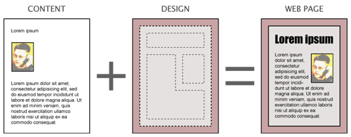
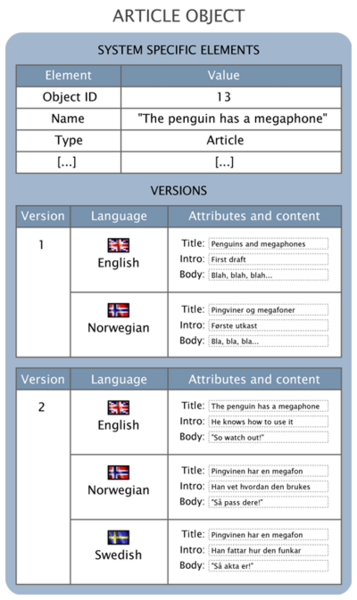
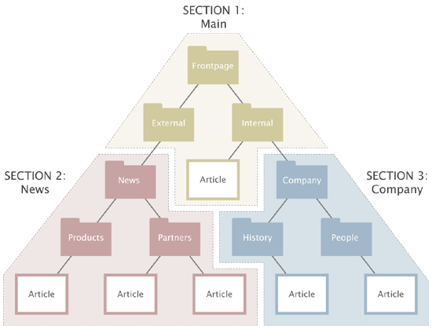

| Classe | Schéma d'un type de contenu |
|---|---|
| Objet | Instance d'une classe de contenu, créée par un contributeur |
| Version | Version publiée / archivée - Historique des modifications d'un objet |
| Noeud | Positionnement(s) d'un objet dans l'arborescence |
| Template | Gabarit de mise en forme d'une vue |
| Override | Surchage d'un comportement par défaut du noyau ou extension |



| content/read | Visualisation d'un contenu |
|---|---|
| content/edit | Edition d'un contenu (contribution) |
| user/login | Possibilité de se logguer sur le siteaccess |